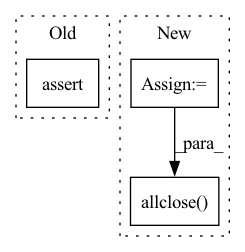

Pattern ID :25104
Before Change
assert beta is not None
assert gamma is not None
assert moving_mean is not None
assert moving_var is not None
def test_with_slim_bn_op(self):
After Change
expected_beta = np.zeros_like(beta)
expected_gamma = np.ones_like(gamma)
expected_mean = np.zeros_like(moving_mean)
expected_variance = np.ones_like(moving_var)
self.assertTrue(np.allclose(expected_beta, beta))
self.assertTrue(np.allclose(expected_gamma, gamma))
self.assertTrue(np.allclose(expected_mean, moving_mean))
self.assertTrue(np.allclose( expected_variance, moving_var) )
sess.close()
def test_with_slim_bn_op(self):In pattern: SUPERPATTERN
Frequency: 3
Non-data size: 3
Instances Fragment ID: 76907549
Project Name: quic/aimet
Commit Name: 3777a691565b271d87eee4c9628851c29078e358
Time: 2020-05-27
Author: quic_ssiddego@quicinc.com
File Name: TrainingExtensions/tensorflow/test/python/test_utils.py
M Class Name: TestTrainingExtensionsTfUtils
N Class Name: TestTrainingExtensionsTfUtils
M Method Name: test_with_tf_bn_op(1)
N Method Name: test_with_tf_bn_op(1)
M Parent Class: unittest.TestCase
N Parent Class: unittest.TestCase
M File Name: TrainingExtensions/tensorflow/test/python/test_utils.py
N File Name: TrainingExtensions/tensorflow/test/python/test_utils.py
M Start Line: 627
M End Line: 636
N Start Line: 546
N End Line: 572
Before Change
diff = np.mean(np.abs(res - res_mm.numpy()))
print(size, filter_shape, "%2.2e." % diff,
np.allclose(res, res_mm.numpy()))
assert np.allclose(res, res_mm)
if __name__ == "__main__":After Change
[filter_shape[1] + size[1] - 1,
filter_shape[0] + size[0] - 1]).T
res_torch = torch.nn.functional.conv2d(
face, filter.flip(2, 3),
padding=(filter_shape[0]-1, filter_shape[1]-1))
diff_scipy = np.mean(np.abs(res_scipy - res_mm.numpy()))
diff_torch = np.mean(np.abs(res_torch.numpy() - res_mm.numpy()))
print(size, filter_shape, "%2.2e." % diff_scipy,
np.allclose(res_scipy, res_mm.numpy()),
"%2.2e." % diff_torch, np.allclose(
res_torch.numpy(), res_mm.numpy()) )
assert np.allclose(res_scipy, res_mm)
assert np.allclose(res_torch.numpy(), res_mm.numpy())
Fragment ID: 76907574
Project Name: v0lta/pytorch-wavelet-toolbox
Commit Name: 0b6d39b0c8b64def69279554ecfafa2cb1234942
Time: 2021-09-09
Author: moritz@wolter.tech
File Name: tests/test_boundary_filters.py
M Class Name: AnonimousClass
N Class Name: AnonimousClass
M Method Name: test_mean_conv_matrix_2d(0)
N Method Name: test_mean_conv_matrix_2d(0)
M Parent Class:
N Parent Class:
M File Name: tests/test_boundary_filters.py
N File Name: tests/test_boundary_filters.py
M Start Line: 71
M End Line: 71
N Start Line: 48
N End Line: 79
Before Change
gamma = BNUtils.get_gamma_as_numpy_data(sess, bn_op)
assert beta is not None
assert gamma is not None
assert moving_mean is not None
assert moving_var is not None
def test_get_output_activation_shape(self):After Change
gamma = BNUtils.get_gamma_as_numpy_data(sess, bn_op)
// check the values read are equal to init values
expected_beta = np.zeros_like(beta)
expected_gamma = np.ones_like(gamma)
expected_mean = np.zeros_like(moving_mean)
expected_variance = np.ones_like(moving_var)
self.assertTrue(np.allclose( expected_beta, beta) )
self.assertTrue(np.allclose(expected_gamma, gamma))
self.assertTrue(np.allclose(expected_mean, moving_mean))
self.assertTrue(np.allclose(expected_variance, moving_var)) Fragment ID: 76907550
Project Name: quic/aimet
Commit Name: 3777a691565b271d87eee4c9628851c29078e358
Time: 2020-05-27
Author: quic_ssiddego@quicinc.com
File Name: TrainingExtensions/tensorflow/test/python/test_utils.py
M Class Name: TestTrainingExtensionsTfUtils
N Class Name: TestTrainingExtensionsTfUtils
M Method Name: test_with_slim_bn_op(1)
N Method Name: test_with_slim_bn_op(1)
M Parent Class: unittest.TestCase
N Parent Class: unittest.TestCase
M File Name: TrainingExtensions/tensorflow/test/python/test_utils.py
N File Name: TrainingExtensions/tensorflow/test/python/test_utils.py
M Start Line: 652
M End Line: 660
N Start Line: 580
N End Line: 604